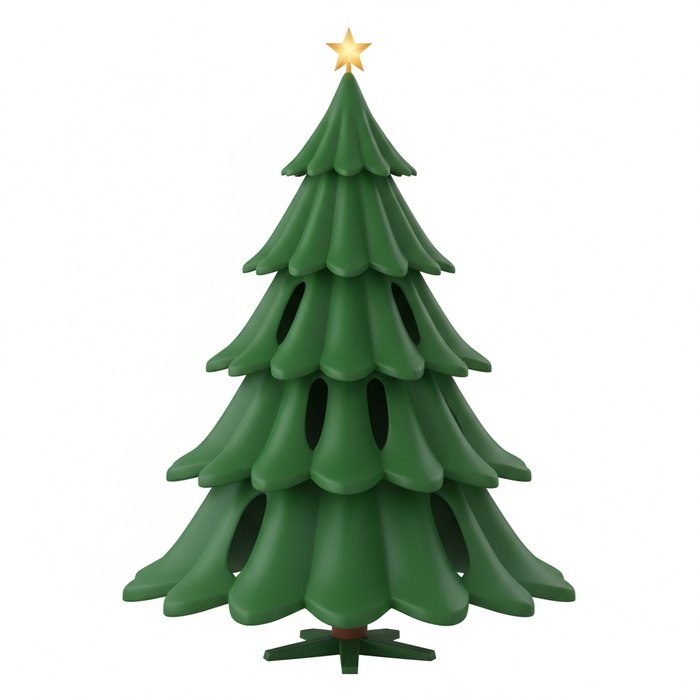
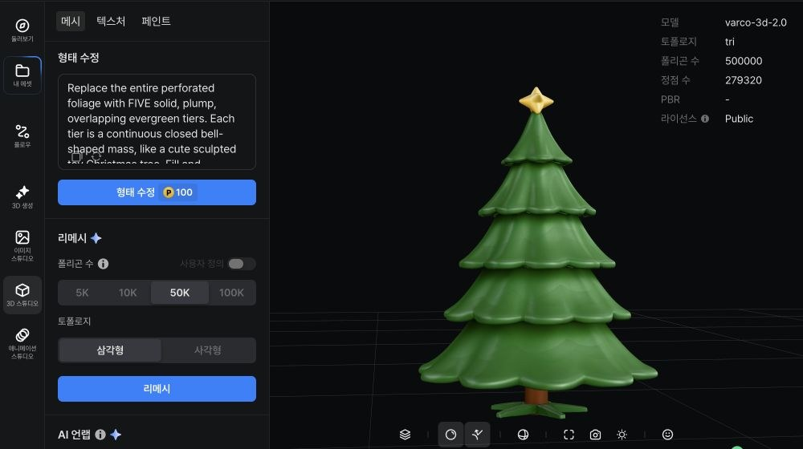
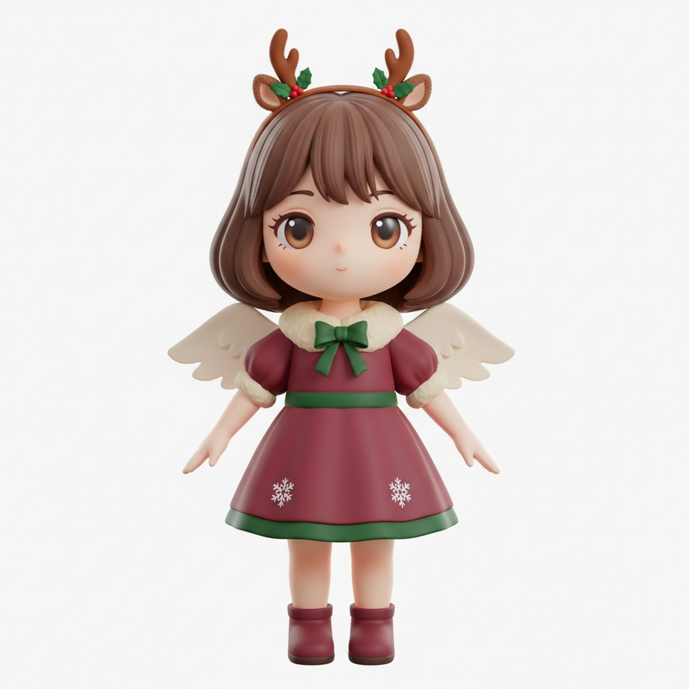

INTERACTIVE CHRISTMAS COLLECTION
작은 겨울을
선물해요.
반짝이는 장식 하나, 살포시 내리는 눈.
손끝으로 나만의 스노우볼을 꾸며보세요.
YOUR LITTLE WINTER 01 / SNOW GLOBE
✧겨울을 준비하고 있어요작은 트리를 불러오는 중
0%
소품을 톡! · 드래그로 둘러보기
✧
한 장의 이미지에서, 손끝의 작은 세계로.
눈사람과 빨간 우체통, 아홉 개의 선물이 함께하는 작은 겨울이에요.
이 겨울은 3D 파일로 내려받아 계속 이어서 만들 수 있어요.
FROM VARCO TO A LITTLE WINTER
이 겨울은 이렇게 만들었어요.
VARCO에서 만든 이미지와 3D 모델,
코드로 완성한 소품과 움직임을 함께 살펴보세요.

트리의 시작
초록 잎과 금빛 별의 실루엣을 정한 생성 이미지예요.

장면 속 트리 본체
빈틈이 많던 잎을 겹치는 단 형태로 수정하고, 메시와 텍스처를 웹용으로 가볍게 다듬었어요. 위 이미지는 저장해둔 실제 VARCO 작업 화면이에요.
VARCO 원본 작업 열기 ↗이미지를 참고해, 코드로 만든 소품
아래는 VARCO 2D 생성 이미지예요. 씬 속 방울·종·선물의 3D 형상과 재질은 코드로 다시 만들었어요.

크리스마스 볼
색 조합과 별 장식을 참고했어요.

작은 종
금빛 종과 초록 리본을 재구성했어요.

리본 선물상자
둥근 상자와 리본을 만들고 색을 변형했어요.
눈사람·우체통·리본 띠·유리 돔·눈·배경은 코드로 제작했어요. 클릭 반응과 애니메이션도 웹에서 구현했어요.

작은 겨울의 천사
부드러운 얼굴과 짧은 단발, 산타 의상으로 다듬은 캐릭터예요. 팔을 약 45도 내린 이 버전을 2D 디자인으로 남겼어요.
3D 변환과 포즈 실험을 거쳤으며, 현재 스노우돔에는 배치하지 않았어요.
3D 생성 실험 화면 보기 ↗